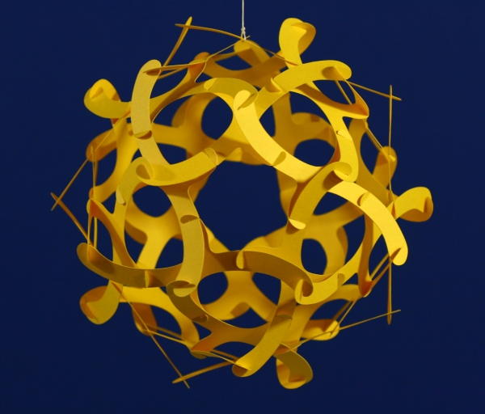

George W. Hart is a research professor at Stony Brook University and an interdisciplinary sculptor, mathematician, computer scientist, and educator. His geometric sculpture is recognized around the world for its mathematical depth and creative use of materials. He is a pioneer in using computer technology and 3D printing in the design and fabrication of sculpture. Examples of his artwork can be seen at major universities, such as M.I.T, U.C. Berkeley, Duke University, Princeton University, and Stony Brook University. He has received praise and awards in numerous exhibitions, including a New York State Council for the Arts Individual Artist's Award. He has been invited to lecture and show his art across the country and around the globe.
Hart's publications center on mathematical applications in sculpture and other fields. His extensive online Encyclopedia of Polyhedra provides a substantial reference, which is used by students and researchers around the world. His groundbreaking Multidimensional Analysis text gives insight into the structures of linear algebra. His Zome Geometry book takes the reader on a hands-on tour of the structures possible in three-dimensional space, and is designed to spark students' interest in geometry. He has been in the process of slowly writing a book on the history of geometry in art.
Hart's mathematical research centers on novel polyhedral structures and algorithms for producing them. He has produced algorithms for generating various new classes of polyhedra, which he then presents to the world in sculptural forms. He is the associate editor for sculpture of the Journal of Mathematics and the Arts. He is on the board of directors of the Bridges Organization, which runs the Bridges conferences on mathematical connections in art, music, and science. He is director of the MoSAIC Project, which brings weekend Math/Art festivals to university campuses. He is active in developing Innovations in Mathematics Education via the Arts.
"I create sculptures which show the fun and creative aspects of mathematics, hoping that viewers will see that math is cool."